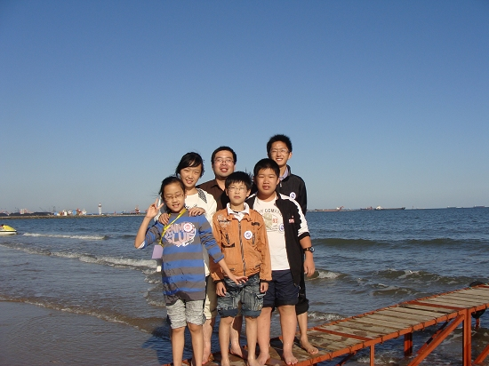
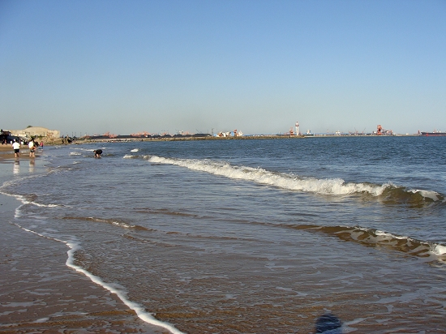

秦皇岛的海滩
首页
江苏五子棋
#1 秦皇岛的海滩 作者：有志青年 发表时间：2010-9-22 18:19:43
带孩子们去秦皇岛参加全国中小学五子棋校际交流活动，忙里偷闲，小放松了一下。
我们出海咯

出海前，我们的合影

秦皇岛的海滩
佛山无影脚
我的个人照
［ 掌棋宣传员 于 2010-9-25 0:08:55 时花20金币送鲜花一朵］
#2 Re:秦皇岛的海滩 作者：圊籽 发表时间：2010-9-23 9:45:42
羡慕。。比赛，顺便去玩了。。
#3 Re:秦皇岛的海滩 作者：中中 发表时间：2010-9-23 18:44:06
风景很美人很幸福。
#4 Re:秦皇岛的海滩 作者：被感动的人 发表时间：2010-9-24 16:38:35
楼上的帖子让我一眼看到了“美人”
#5 Re:秦皇岛的海滩 作者：小调皮 发表时间：2010-9-25 10:33:33
哈哈，爽!又玩又有收获，真不赖……
#6 Re:秦皇岛的海滩 作者：黄药师 发表时间：2010-9-25 10:41:44
 趁我还在赛场，偷出去玩了。。。。。
趁我还在赛场，偷出去玩了。。。。。
#7 Re:秦皇岛的海滩 作者：非黑既白 发表时间：2011-7-25 20:36:56
海滩很美，只是穿着太正规了